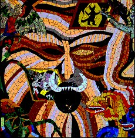
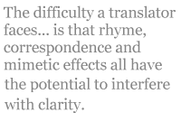

Hell in Translation
[ Comparing three recent verse translations of Dante’s The Inferno ]
For centuries The Divine Comedy by Dante Alighieri has been regarded as the pinnacle of the Western canon. Yet Italian is spoken by only an estimated 62 million people worldwide, or just under 1% of the world’s population. The translation of Dante therefore assumes an enormous importance.
One of the key difficulties in approaching Dante lies in the fact that the student is attempting to read not just a different language, but the different language of a different time. Indeed Dante Alighieri (1265-1321) predates Chaucer (C. 1340-1400.) While the Italian language of Dante’s day was not as different from modern Italian as Chaucer’s English was from our own, Dante’s city-state of Florence with its violent politics oriented on religious lines was vastly different from the Italy we know. In 1301 the faction to which Dante belonged, known as the white Guelphs, lost power and all its members were expelled from Florence. Dante was traveling at the time but was convicted in absentia in 1302 and never returned to his beloved native city again.
It is thought Dante began writing his masterwork in around 1313, having exhausted all political possibilities for contriving a return from exile. The Divine Comedy is thus in part a political document expounding Dante’s theories that factionalism is self-defeating, and in part a theological document deploring the politicalization and resulting moral corruption of the Catholic church. One device Dante used which allowed him to demonstrate these effects was to set The Divine Comedy back in April 1300. This enables all the characters the pilgrim Dante meets on his journey to provide accurate prophesies about his upcoming exile.
The journey taken by Dante the pilgrim, and described by Dante the poet — an important distinction — is one through the geography of Hell, Purgatory and Heaven. Dante assigns 33 Cantos, each with a number of lines varying from 124 to 157, to each section. An introductory Canto at the beginning of The Inferno brings the total number to 100. Symmetry is an important feature of the poem: 3 approaches the status of a magic index, and thus it is no surprise that each Canto is divided into tercets. The structure of the tercets offers the reader one of Dante’s greatest innovations, Terza Rima.
As James Merrill put it: “No verse form moves so wonderfully. Each tercet’s first and third line rhyme with the middle one of the preceding set and enclose the new rhyme-sound of the next, the way a scull outstrips the twin, already dissolving oarstrokes that propel it (229).” Terza Rima’s unique capacity for providing a forward momentum to the poem, while at the same time interlocking and cementing incidents and images between surrounding lines, has been a source of wonder — and frustration to the translator — ever since.
The three books of The Divine Comedy are a unit and it is important to be aware of the progression of Dante the pilgrim as he moves through them. However, The Inferno is considered by many to be the finest of the three books and the best introduction to Dante. Readers are compelled by Dante’s immense imaginative gift, outstanding both in the descriptions of the harsh geography of hell and the grotesque mythological creatures who police it, but perhaps even more so in the vast array of punishments meted out to Dante’s unrepentant sinners. Dante’s Inferno is a bloody and violent train wreck, and the reader simply can’t look away.
Hell is envisaged as an inverted cone dropping down into the bowels of the earth. As Dante descends therefore, he travels a circular path around the cone, passing through the Circles of Hell, which have decreasing diameter, until at the bottom he encounters Satan in the frozen Sea of Cocytus. In Upper Hell, where the sins of incontinence — lust, gluttony, avarice and anger — are punished, the structure is relatively simple — a single Canto corresponds closely to one Circle and one sin e.g. Canto 5 covers the Second Circle, location of the Lustful. Once Dante has crossed the Styx into the walled City of Dis, he enters Lower Hell, where the more serious sins of Violence and Fraud are punished, and the Circles themselves are subject to multiple divisions, often each requiring several Cantos. This enables Dante to make fine distinctions between categories of sin. And as Dante the pilgrim descends he meets and talks with the sinners. Often, conveniently enough, they speak not only his language but his Florentine dialect.
But what about those of us who don’t speak Dante’s language? Henry F. Cary provided the first solution in 1814 by publishing a blank verse translation of the entire Divine Comedy, which went through four editions establishing the work as a classic text, at least in England. It took Longfellow’s 1865 version to accomplish the same for American audiences, who had an innate suspicion of the work’s lurid Catholicism. Other landmark versions include Laurence Binyon’s translation, much admired by Ezra Pound; Dorothy Sayer’s version, commissioned by the British publishing house Penguin for their Classics label; and Charles Singleton’s prose translation, lauded by literalists everywhere. Since then many translators have produced versions; some have rendered the entire Divine Comedy into English, while others have concentrated on The Inferno. This essay will consider the recent verse translations of The Inferno by Robert Pinsky, Mark Musa and Michael Palma.
Although a more interpretative approach is often suitable for shorter, lyric poems, the primary challenge faced by a translator of an epic narrative poem such as The Inferno is to interpret the literal meaning of the original as faithfully as possible. As Musa discusses, Dante made it clear in his Convivio that his “writings should be expounded in four senses: the literal, the allegorical, the moral, and the anagogical” (35). Dante goes on to conclude that “it is the literal sense of the great poem that contains all its other possible meanings” (36). Only by getting the literal sense correct, then, can the translator be sure that he or she has communicated the author’s full intent.
Beyond that responsibility, the translator can choose between various strategies which have to do with the structural or mechanical properties of the translation — the degree to which the form imitates the original in meter, correspondence and rhyme.
Looking first at meter, the original is in hendecasyllables, but most translations go to the iambic pentameter English more readily accommodates. By correspondence I mean the extent to which line and stanza unity mirrors the original and this differs a good deal between our chosen three translations. (As an aside Longfellow was a stickler for correspondence and actually tried for a word for word match, which led to some very strange word order, e.g. “Things saying ’tis becoming to keep silent,/ As was the saying of them where I was.”) For rhyme, of course, translators have the option of everything from prose to attempting a form of terza rima. Finally there are a host of other poetic qualities to consider such as diction, enjambing versus endstopping, and mimetic effects including alliteration. The difficulty a translator faces in attempting to do all of the above is that rhyme, correspondence and mimetic effects all have the potential to interfere with clarity. It is of course a matter of personal preference how much clarity an individual reader is willing to sacrifice for closeness to the original, and therefore it must be stressed that any quantitative assessment of merit is purely subjective.
All three of these translators probably achieved their own stated aims. Pinsky was going for a translation with a very modern, pacy feel — hence the slant rhyme Terza Rima based predominantly on consonance, and the minimal line/tercet correspondence to the original.
Palma, on the other hand, wanted to get as close as possible to the original Terza Rima form. His has a much stricter rhyme scheme which permits occasional slant rhymes and it also has one-to-one tercet correspondence with the original.
Lastly Musa wanted clarity and closeness to the original in meaning and tone above all things. Hence his translation is in blank verse tercets which typically demonstrate one-to-one line correspondence with the original.
Having opined that faithfulness in meaning in the case of The Inferno is primary, I will begin by summarizing some relevant differences between the three translations which are not accounted for by interference from the structural and poetic choices the translator has made.
Firstly and somewhat prosaically I would like to consider the matter of footnotes and diagrams. The Pinsky version contains a highly useful and concise plan of Dante’s Journey through Hell, which tabulates Canto, locale, demons or creatures, class of soul and names specific souls encountered by Dante. It also contains a sketch map which is a little difficult to read; 50 pages of condensed text footnotes are located at the end of the book. Palma’s version contains a brief plan of hell which is little more than a list, and scanty footnotes, often half a page or less following each Canto. Musa’s version has a number of exquisite diagrams, offers a prose summary of each Canto at the beginning of the verse, and several pages of comprehensive notes after each Canto. The Musa version does, therefore, offer the fullest elucidation of Dante’s text. For those readers who prefer to avoid footnotes first time through, Pinsky’s isolation of these perhaps provides a better option.
Distinctions can also be made between the translations when the literal rendering of the Italian into English gives rise to a different fundamental interpretation of what is happening. There are several examples of this; I will select a couple of the most interesting, beginning with Canto XXVI in the eighth “Bolgia” of the eighth circle, where Ulysses and Diomedes are trapped together in a single flame:
He said: “Within, Ulysses and Diomed
are suffering in anger with each other,
just vengeance makes them march together now. (Musa XXVI.55-57)
He answered: “joined in torment in that fire
Ulysses and Diomed endure the force
of vengeance as they once were joined in ire. (Palma XXVI.55-57)
… He answered, “In it go
Tormented Ulysses and Diomedes
Enduring vengeance together as they did wrath. (Pinsky XXVI.57-59)
Ulysses and Diomedes were both major Greek figures who fought together at the Siege of Troy. The eighth circle is where various categories of the sin of simple fraud are punished, and the big act of fraud perpetrated by Ulysses and Diomedes was, of course, the Trojan horse. The sticking point seems to be whether Ulysses and Diomedes are still united in the anger which compelled them to violence in life, and this constitutes part of the contrapasso of their punishment (Musa) or whether the anger that drove them was only in the past and they now simply suffer (Palma, Pinsky.) (Contrapasso literally means that the punishment fits the crime, and Dante comes up with some wonderfully inventive punishments accordingly.) Musa justifies his choice in a lengthy footnote, concluding that “‘Togetherness’ in punishment suffered by those who were once joined in sin has been suggested in the case of Paolo and Francesca.”
One more example of this may allow us to draw some tenuous conclusions. In Canto XXXIV Virgil and Dante finally leave hell behind them by climbing down Satan’s hairy body. When they reach his legs (the exact center of the Earth) Virgil turns around as if to head back up, but thanks to the reversal of gravity, this actually takes them up Satan’s legs and back toward the surface of the earth’s opposite hemisphere:
My guide, with strain and force of every muscle,
turned his head toward the shaggy shanks of Dis
and grabbed the hair as if about to climb — (Musa, XXXIV.78-80)
My leader with movements pained and strenuous
brought his head round to Satan’s shanks and then,
just like a climber, grappled on the hair. (Palma, XXXIV.78-80)
…with strain
And effort my master brought around his head
To where he’d had his legs… (Pinsky, XXXIV.76-78)
Here the disagreement is whether the legs belong to Virgil (Pinsky) or Satan (Musa, Palma.) Musa footnotes the passage thus: “…of all the translations of this passage I have read…none translates line 79 as I do, attributing the “shanks” to Lucifer; all give them to Virgil. This is not because the line is difficult…; in fact, it is not even ambiguous…What must have happened is that every translator has copied unthinkingly translators that have preceded” (386). Referring to the earliest translation I can access, I do indeed find that Cary attributes the legs to Virgil: “My leader there with pain and struggling hard/ Turn’d round his head, where his feet stood before” (79-80). Musa also differs in the first example of disagreement given above, while both Palma and Pinsky again concur with Cary:
He replied: “Within
Ulysses there and Diomede endure
Their penal tortures, thus to vengeance now
together hasting, as erewhile to wrath. (65-68)
It would seem that of the three translators, Musa has taken most trouble to revisit the Italian and make sure he has provided the best literal translation. While the actual differences may seem trifling, his attitude should commend his work to those readers who require the highest level of literal faithfulness to the Italian original.
For many other readers, of course, the joy of the poem lies in its approximation of the original form Dante selected, including the Terza Rima. As Pound wrote to Binyon after reading his translation: “MAGNIFICENT FINISH! Utterly confounds the apes who told you terza rima isn’t English…The beauty here would only have been got by using terza rima” (Qtd. in Fitzgerald 154). Musa, on the other hand, justifies his decision to use blank verse by saying “my main reason for avoiding rhyme has been the results achieved by all those who have used rhyme in translating The Divine Comedy: they have shown that the price paid was disastrously high” (61). I shall now attempt to illustrate the merits and demerits of the structural qualities of our three translations using some of the most well known parts of The Inferno, beginning with the famous opening.
The poem starts with Dante in a mid-life crisis. He’s “lost the right road” although we never really learn what that means. A lady called Beatrice is watching over him and sends help in the form of the classical Roman poet Virgil, who leads him on a tour of the afterlife to help Dante mend his ways. At the end of Purgatory Beatrice takes over herself as guide. Dante worshipped Beatrice as the ideal of womanly beauty and virtue, even though he only met her a few times, and she married someone else. After she died at 24 in 1290, Dante began composing poems to her memory. The Divine Comedy could be seen as the pinnacle of this inspiration.
Midway along the journey of our life
I woke to find myself in a dark wood,
for I had wandered off from the straight path.//
How hard it is to tell what it was like,
this wood of wilderness, savage and stubborn
(the thought of it brings back all my old fears.) (Musa, I.1-6)
Midway through the journey of our life I found
myself in a dark wood for I had strayed
from the straight pathway to the tangled ground.//
How hard it is to tell of, overlaid
with harsh and savage growth, so wild and raw
the thought of it still makes me feel afraid. (Palma, I.1-6)
Midway on our life’s journey, I found myself
In dark woods, the right road lost. To tell
About those woods is hard — so tangled and rough//
And savage that thinking of it now I feel
The old fear stirring: death is hardly more bitter.
And yet to treat the good I found there as well…” (Pinsky, I.1-6)
The first thing which strikes the reader comparatively is the correspondence of the Musa and Palma passages to each other, which mirrors the original Italian, and the relative degrees of enjambment. The Musa passage has the least enjambment. As Saintsbury says, “the Dantean tercet is…curiously integral, a point which Dante carefully guards and watches by avoiding as much as he possibly can the running of one tercet into another” (Vol. III, 107). Both Musa and Palma have attempted to replicate this. Musa has given his lines an exact correspondence of sense to the Italian, minimizing enjambment, because in Dante’s time that was how verse was written. Palma allows some additional enjambment over the Italian, such as moving “I found” from line 2 to 1, but the sense of each tercet corresponds to the Italian one. Pinsky has compressed the sense of Dante’s first 6 lines into 41/2 lines, which gets the narrative going at great pace. This may appeal the most to the modern reader accustomed to extreme enjambment such as the break after “to tell.” It is worth noting, however that the sense of the tercet as a paragraph unit is completely lost by making the last line of the tercet begin a new subject.
Moving onto the meter, Musa’s blank verse reads flawlessly — perhaps a little too flawlessly: all lines bar line 5 are exactly ten syllables and correspond to standard iambic pentameter patterns, which risks monotony. Palma’s version trips along a little more lightly, and the perfect masculine and predominantly monosyllabic end rhymes chime nicely.
Pinsky’s version falters at line 2: the line is over stressed, beginning with a headless double iamb:
^ / / | ^ / | ^ / | ^ /
In dark woods, the right road lost. To tell
Whereas this could function as a poetic device, the hard caesura after the fourth foot followed by the opening of the new sentence works against that effect. Pinsky’s slant rhymes (myself/rough; tell/feel/well) barely register. On the plus side, his verse is concise and well-paced. In order of personal preference I would rate these passages Palma, Musa, Pinsky.
Next I would like to look at the beautiful set piece in Canto V where Francesca succeeds in moving the Pilgrim Dante to pity for her plight. Francesca was married for political reasons, but fell in love with her husband’s younger brother Paolo. One day the betrayed husband found them in flagrante delicto and killed them both. This passage contains some of the most elevated language in The Inferno, and indeed draws on Dante’s earlier lyric love poetry:
Love, quick to kindle in the gentle heart,
seized this one for the beauty of my body,
torn from me, (How it happened still offends me!)
Love, that excuses no one loved from loving,
seized me so strongly with delight in him
that, as you see, he never leaves my side.
Love led us straight to sudden death together.
Caina awaits the one who quenched our lives. (Musa, V.100-107)
Love, which in gentle hearts flares rapidly,
seized this one for my lovely body — how
it was violently stripped away still injures me.
Love, which when one is loved, does not allow
that it be refused, seized me with joy in him,
which as you see, is with me even now.
Love led us to a single death. The grim
Caina awaits to claim our murderer.” (Palma, V.100-107)
Love, which in gentle hearts is quickly born,
Seized him for my fair body — which in a fierce
manner that still torments my soul was torn
Untimely away from me. Love, which absolves
None who are loved from loving, made my heart burn
With joy so strong that as you see it cleaves
Still to him here. Love gave us both one death.
Caina awaits the one who took our lives. (Pinsky, V.89-96)
Again it is worth looking first at correspondence with the Italian. The first lines of the three tercets represented here begin “Amor…Prese” and “Amor…Mi Prese,” followed by “Amor.” This is perfectly duplicated in the Musa construction “Love…seized”, “Love…seized me” and “Love.” Palma’s version keeps the “Love…love…love” but loses the second “seized.” Thanks to the enjambment, the Pinsky version loses most of the line parallelism, although the repetition of love internally still chimes loudly.
Metrically speaking Musa appears to have hit his stride here. The blank verse is enlivened by a series of trochaic beginnings, particularly the dramatic “Torn from me.” Palma’s version, by contrast seems understressed and passive. Pinsky’s first few lines could be accused of containing metrical filler, given the four modifiers (gentle, quickly, fair and fierce, this last having no parallel in the text.)
Pinsky’s slant rhymes (born/torn/burn; absolves/cleaves/lives) work better in this segment, if you can forgive the somewhat Biblical “cleaves”, than Palma’s full ones. Palma has had to invent “grim” as a modifier for Caina non-existent in the text to reach his, and also rhymes on the soft words/endings –ly, how and me. Caina, by the way, is one of the four divisions of Cocytus, the lowest part of Hell, and it’s reserved for those who treacherously betrayed their kin, so although Francesca didn’t get off lightly, her husband will have it much worse! Speaking personally again, I would rate these passages Musa, Pinsky, Palma.
Perhaps this is a good opportunity to turn from an examination focused on structural qualities to one slanted toward other poetic qualities such as poetic devices used for mimetic effect and diction, and how these, combined with rhyme driven word and syntax choices occasionally affect clarity. My theory is that, whereas in Italian (or when composing original Terza Rima) one can strive for mimetic effect AND rhyme, when translating a fixed text, one can only realistically do one or the other without detriment to clarity.
In Canto XXI Dante describes the boiling pitch which is these days almost synonymous with caricatures of hell:
A sticky tar was boiling in the ditch
that smeared the banks with viscous residue.
I saw it there, but I saw nothing in it,
except the rising of the boiling bubbles
breathing in air to burst and sink again. (Musa, XXI.17-21)
Through heavenly art the pitch boiled endlessly
and spread its gluey coating everywhere.
I could see the pitch, but all that was clear to me
inside it were the bubbles on its tide
as it rose and fell in one great heaving sea. (Palma, XXI.17-21)
But by some art of Heaven, a heavy pitch
Was boiling there below, which overglued
The banks on every side. I saw that much,
But could see nothing in it but the flood
Of bubbles the boiling raised, and the whole mass
Swelling and seething. (Pinsky, XXI.16-21)
Musa and Pinsky both manage some of the alliterative/repetitive qualities of the passage (“saw/saw”, “boiling bubbles/ breathing” versus “saw/see”, “bubbles/boiling…swelling/seething.) Palma not only fails to do so but actually introduces what Musa calls a “subtle sin” — a conspicuous effect not present in the original in the shape of the tide/sea metaphor.
In Canto XXIII Dante and Virgil have just escaped from some pitchfork wielding demons known as the Malebranche, whose job is to keep the sinners found guilty of fraud submerged in the boiling pitch. Events have turned somewhat farcical, and Dante is reminded of one of Aesop’s fables:
I was thinking over one of Aesop’s fables
that this recent skirmish had brought back to mind,
where he tells the story of the frog and mouse;
for “yon” and “there” could not be more alike
than the fable and the fact, if one compares
the start and finish of both incidents. (Musa, XXIII.4-9)
I was reminded by the demon’s fray
of Aesop’s fables, the one in which we see
the story of the frog and mouse. I say
that now is no closer to immediately
than these two cases if we scrutinize
beginnings and conclusions carefully. (Palma, XXIII.4-9)
…The present fracas turned my mind
To Aesop’s fable of the frog and mouse:
Now and this moment are not more similar
Than did the tale resemble the newer case,
If one is conscientious to compare
Their ends and their beginnings. (Pinsky, XXIII.3-8)
Musa’s version not only achieves some of the alliterative quality of the original (fable/fact/finish with fa/fine/fissa) but also cuts through the fog using the clear English idiom “could not be more alike.” Palma’s sacrifices the plain speaking diction of the Italian with words like immediately/scrutinize/conclusions. Pinsky wrenches syntax with “are not more similar than” for the sake of reaching a very slant rhyme with “compare.”
Reading my analysis of all these passages will no doubt offer the impression that I prefer Musa’s version out of the three examined, with Pinsky’s running second and Palma’s taking a commendable last place. This is perhaps true overall, although it is worth pointing out that both of the Terza Rima versions do provide passages of extraordinary beauty where the rhyme scheme contributes to the verisimilitude of the translation while not impeding clarity or offending diction. Here is Palma at his best:
In that part of the young year when the sun’s rays
are tempered beneath Aquarius and when
the nights grow shorter, equaling the days,
and when her white sister’s image once again
appears upon the ground as copied by
the hoarfrost with her quickly dulling pen,
the peasant, with the loss of his supply
of fodder, goes outside in anxiety
to see the whitened fields, and smites his thigh. (Palma, XXIV.1-9)
But it is actually in the process of writing this essay that I have arrived at perhaps my most profound reason for my preference. Coming to this project with a little Latin and no Italian to speak of, it was only by comparing the Italian text with an English version in which lines corresponded almost one for one that I was able to read for myself the lines Dante wrote with some degree of understanding. Pinsky’s is a fine translation with great momentum which propels the reader forward even without the addendum of his generally unobtrusive slant Terza Rima, but it is impossible to read it alongside the Italian and relate the one to the other. Palma’s is to be admired for his closeness to the Terza Rima form, but his willingness to add in his own figures in search of close to perfect rhymes hampers the true Dantista from going to the text. Robert Duncan reminds us that Dante himself argues against translation in the first treatise of his Convivio, saying that his odes do not will “that their meaning should be expounded where they themselves could not carry it together with their beauty” (198-9) The best way to appreciate that beauty is to read The Inferno first Canto by Canto in English, then tercet by tercet in Italian alongside an English translation that closely approximates the sense of, and has a line to line correspondence with, the Italian. The translation that best accomplishes this is the one by Mark Musa.
Works Cited
Alighieri, Dante. The Divine Comedy of Dante Alighieri, Inferno. Trans. Henry Wadsworth Longfellow. Project Gutenberg eText. 1997.
Alighieri, Dante. The Vision, or Hell, Purgatory and Paradise of Dante Alighieri: HELL. Trans. Henry F. Cary. Project Gutenberg eText. 1997.
Alighieri, Dante. The Divine Comedy Volume 1: Inferno. Trans. Mark Musa. New York. Penguin Classics. 2003.
Alighieri, Dante. Inferno. Trans. Michael Palma. New York. W. W. Norton & Company. 2002.
Alighieri, Dante. The Inferno of Dante. Trans. Robert Pinsky. New York. Farrar, Straus and Giroux. 1996.
Duncan, Robert. “The Sweetness and Greatness of Dante’s Divine Comedy”. The Poets’ Dante. Ed. Peter S. Hawkins and Rachel Jacoff. New York. Farrar, Straus and Giroux. 2001.
Eliot, T.S. “The Waste Land.” Selected Poems. London. Faber & Faber. 1987.
Fitzgerald, Robert. “Mirroring the Commedia: an Appreciation of Laurence Binyon’s Version.” The Poets’ Dante. Ed. Peter S. Hawkins and Rachel Jacoff. New York. Farrar, Straus and Giroux. 2001.
Merrill, James. “Divine Poem.” The Poets’ Dante. Ed. Peter S. Hawkins and Rachel Jacoff. New York. Farrar, Straus and Giroux. 2001.
Saintsbury, George. A History of English Prosody. Volume II. New York. Russell & Russell. 1961.